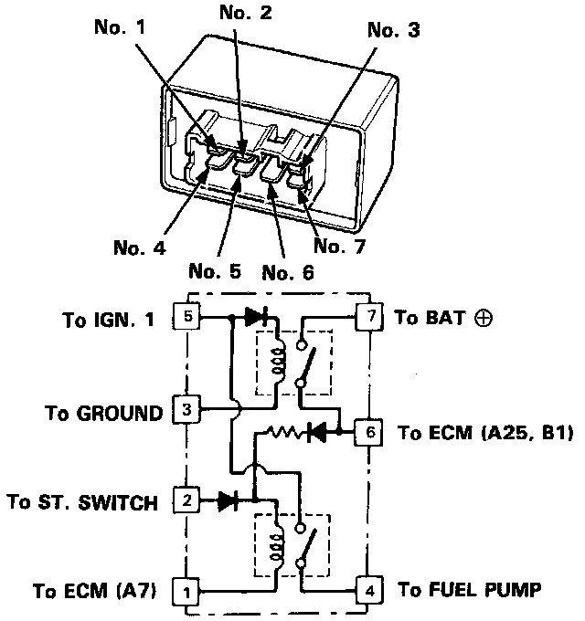

Main Relay (Computer/Fuel System): Specifications
PGM-FI Main Relay Schematic View:

FUEL PUMP MAIN RELAY
Continuity Between No. 6 terminal and No. 7 terminal when,
a. Battery positive (+) voltage applied to No. 5 terminal
b. Battery negative (-) voltage applied to No. 3 terminal
Continuity Between No. 4 terminal and No. 5 terminal, when,
a. Battery positive (+) voltage applied to No. 6 terminal
b. Battery negative (-) voltage applied to No. 1 terminal